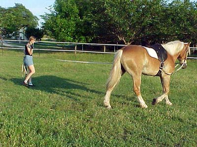
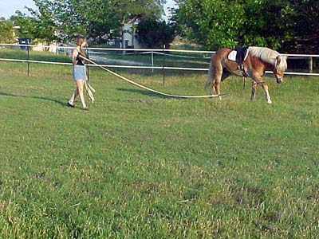
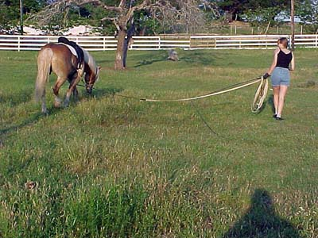
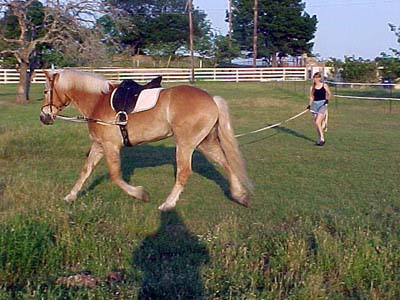
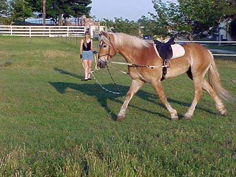
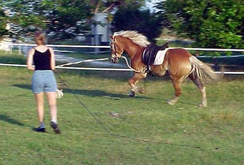

On the lunge we also work at him lengthening
his walk. Right now this is the best I can hope for. Him tracking up.

There's some improvement with him
reaching under himself.

I'm also trying to encourage him to
stretch down with his head, while I continue to drive his hind end under
him. At his level, I'm not sure how much good this does, but at least I
feel better...

He's really stretching, even though
he's thinking about grazing. I figure as long as I keep him moving forward,
the motivation doesn't matter.

Yeah, on the lunge and reaching for
the bit, but not bracing his under neck against it. I don't think this
is as useful as riding, but at the walk I can see better how he's responding.

The best that he's been on the lunge.
I have the side reins long and don't have to crank his nose in. He's stretching
his neck forward and almost on the vertical.

He must be getting his balance, because
he was willing to canter on the lunge and get the correct leads.